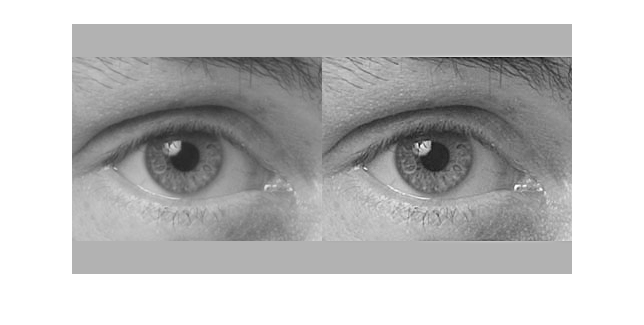
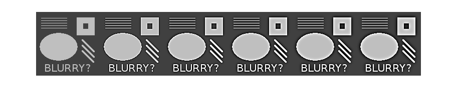
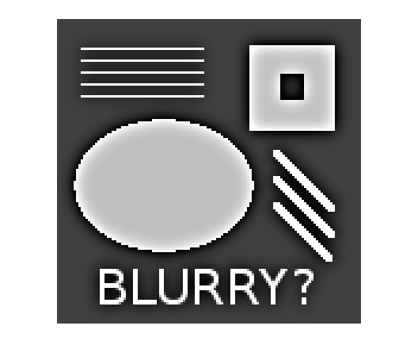
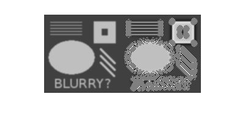
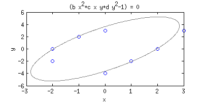
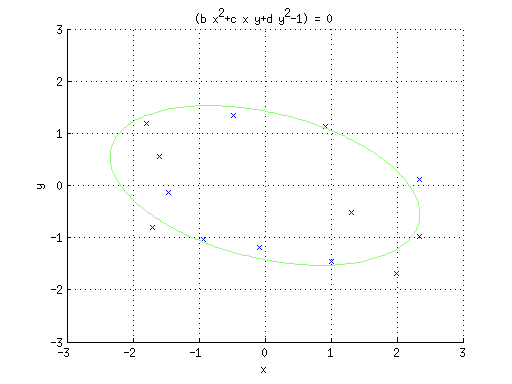

Q1 - git it done
Zhiming Darren TAN (5):
first commit
Merge branch 'master' of https://github.com/zdtan/scicomp-hw3
test
4am and still not done!
6am and sort of done!
Q2 - a little more least squares
m = 50;
n = 5;
t = linspace(0,1,m)'; %transpose to form column vector
A = fliplr(vander(t));
A = A(:,1:n);
b = cos(4*t);
backslash (x1)
x1 = A\b;
%plot(t,A*x1,'--b');
n1 = norm(A*x1-b);
normal equation (x2)
x2 = A'*A\A'*b;
%plot(t,A*x2,'--b');
n2 = norm(A*x2-b);
QR factorisation (x3)
[Q,R] = qr(A);
y = Q'*b;
x3 = R\y;
%plot(t,A*x3,'--b');
n3 = norm(A*x3-b);
SVD (x4)
[U,S,V] = svd(A,0);
x4 = V*inv(S)*U'*b;
%plot(t,A*x4,'--b');
n4 = norm(A*x4-b);
Summary of methods
format long g x = [x1 x2 x3 x4] res_norms = [n1 n2 n3 n4]
x =
Columns 1 through 3
0.977651051050956 0.977651051051456 0.977651051050952
0.787296437030576 0.78729643702075 0.787296437030604
-13.7266900281111 -13.7266900280686 -13.7266900281111
14.9930146535961 14.9930146535324 14.9930146535962
-3.66575965474393 -3.66575965471298 -3.66575965474396
Column 4
0.977651051050958
0.787296437030578
-13.7266900281111
14.9930146535962
-3.665759654744
res_norms =
Columns 1 through 3
0.0613567562398873 0.0613567562398872 0.0613567562398881
Column 4
0.0613567562398875
Based on the 2-norms of the residuals, the QR factorisation stands out from the other methods (larger in the 14th digit).
Q3 - condition numbers
Devise an experiment?!
cond(A)
ans =
642.667357121995
Q4 - image processing and the "unsharp mask"
function [ uenhance ] = unsharp( u, N, strength )
% Returns matrix of pixels, u is value of imread. % N is number of blurring steps, and % strength is the blurring parameter (0.1 in original example).
Use image read in from a file
[n,n2] = size(u); if (n ~= n2) error('by default, this only supports square images') end
Build a discrete 2D Laplace operator
e = ones(n,1); L1 = spdiags([e -2*e e], [-1 0 1], n, n); % this next line implements "Neumann boundary conditions": you could % try commenting it out. L1(1,1) = -1; L1(end,end) = -1; I = speye(n,n); L = kron(L1, I) + kron(I, L1); % "stretch" the matrix representation of the image into one long % vector. v = reshape(u, n*n, 1); % do N steps of blurring, of specified strength for i=1:N v = v + strength*(L*v); end % create edge map edge = reshape(u, n*n, 1) - v; % enhance image enhance = reshape(u, n*n, 1) + edge; % convert the long vector back into a matrix ublur = reshape(v, n, n); uedge = reshape(edge, n, n); uenhance = reshape(enhance, n, n);
end
1. Unsharp mask on 'eye.png'
u = imread('eye.png'); % convert image to double and scale to [0,1] u = double(u) / 255; uenhance = unsharp(u, 10, 0.1); result = [u uenhance]; imwrite(result, 'result-eye.png'); imshow('result-eye.png');
2. Unsharp mask on non-blurry image
u = imread('testpat_noblur.png'); % convert image to double and scale to [0,1] u = double(u) / 255; result = u; for N = 10:10:50 uenhance = unsharp(u, N, 0.1); result = horzcat(result, uenhance); end imwrite(result, 'result-noblur.png'); imshow('result-noblur.png'); figure; clf; imshow(uenhance, 'InitialMagnification', 300); 
The unsharp mask locally changes grey to white and black on either side of the edge.
More blurring steps increases this contrast at the edges.
3. Changing blurring strength parameter from 0.1 to 0.5
u = imread('testpat_blur2.png'); % convert image to double and scale to [0,1] u = double(u) / 255; uenhance = unsharp(u, 10, 0.5); result = [u uenhance]; imwrite(result, 'result-2.png'); imshow('result-2.png');
Changing the blurring parameter from 0.1 to 0.5 introduces more "noise" at the edges because of too much "diffusion".
Q5 - fitting ellipses via least-squares
(a)
Solve Ax=b, where b is a n x 1 column vector of ones, and A is a n x 3 matrix with each row being the values x^2, xy, y^2 for each coordinate point (x,y).
(b)
function [b c d] = ellipse(x, y) A = [x.^2; x.*y; y.^2]'; %transpose so n-by-3 n = length(x); %should be same as length(y) as well! e = ones(n,1); sol = A\e; b = sol(1); c = sol(2); d = sol(3); end % driver code x = [3 1 0 -1 -2 0 -2 2]; y = [3 -2 3 2 -2 -4 0 0]; [b c d] = ellipse(x, y); plot(x,y,'o'); hold all; fitted = @(x,y)(b*x^2+c*x*y+d*y^2-1); ezplot(fitted);
(c)
% input points figure; clf; hold off, axis([-3 3 -3 3]), axis manual, hold on, grid on; X = []; Y = []; button = 1; disp('input points with mouse, button >= 2 for final point'); while button == 1 [xx,yy,button] = ginput(1); X = [X; xx]; Y = [Y; yy]; plot(xx,yy,'x'); end [b c d] = ellipse(X', Y'); %transpose X, Y to row vectors hold all; fitted = @(x,y)(b*x^2+c*x*y+d*y^2-1); ezplot(fitted);
input points with mouse, button >= 2 for final point